O Santo Sudário, é um Lençol de linho branco com 4,36 metros de comprimento por 1,10 metros de largura, que José de Arimatéia comprou (Mc 15,46) para envolver o Corpo sem vida de JESUS retirado da Cruz e a seguir coloca-lo no Sepulcro, conforme o costume e a lei dos judeus. Arimatéia era membro do Grande Conselho judeu, mas secretamente simpatizava e acolhia a doutrina do SENHOR. (Jo 19,38-40)
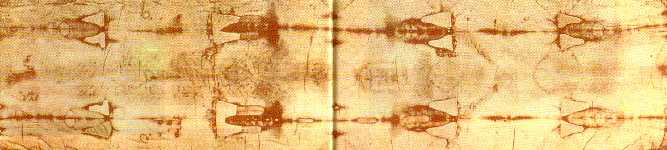
O ritual de sepultamento incluÃa lavagem
e limpeza do corpo, com sete imersões. Todavia estas atividades não foram
realizadas porque não houve tempo, estava no final do horário que marcava
a véspera do Sabath (dia de repouso), também inÃcio das Celebrações da Páscoa
Judaica. O aparecimento das primeiras estrelas no céu indicava o inÃcio do sábado,
que era um tempo sagrado de acordo com o costume e os termos da Lei. Dessa forma,
fizeram tudo às pressas: tiraram o SENHOR da Cruz, estenderam o Lençol de linho na
mesa funerária dentro do sepulcro (uma saliência na rocha em forma de cama), ungiram
o Corpo do SENHOR com uma mistura de aloés e mirra e O colocaram sobre a metade
do tecido, cobrindo-O com a outra metade, da cabeça aos pés; em seguida, amarraram
o Lençol ao Corpo com tiras de pano, procedendo com a maior rapidez, para não
ultrapassar o horário permitido, a fim 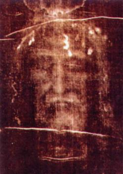
O dia seguinte era sábado, dedicado ao repouso e orações. No entardecer do sábado, quando as primeiras estrelas surgiram no céu, indicava que o tempo sagrado havia terminado e pelo costume judeu, começava o primeiro dia da semana (domingo). As Santas Mulheres agilizando providências, foram ao mercado e compraram aloés e mirra, e em casa, a noite, prepararam a mistura com objetivo de na manhã do dia seguinte (domingo cedo), ungirem dignamente o Corpo de JESUS, completando desse modo o sepultamento, de acordo com a lei.
No Evangelho de JESUS escrito pelo Apóstolo MARCOS:
“Passado o sábado, Maria Madalena e Maria de Cleófas, mãe de Tiago Menor e Salomé, compraram aromas para ir ungi-LO. De madrugada, no primeiro dia da semana (Domingo) elas foram ao túmulo ao nascer do sol.†(Mc 16, 1-2)
Lá chegando, encontraram o tumulo aberto com a pedra que o fechava deitada ao lado. JESUS tinha Ressuscitado. Desceram correndo o morro e chamaram os Apóstolos. Pedro e João vieram e constataram que o sepulcro estava aberto e os panos de linho no chão. O Sudário não estava no chão, mas dobrado e colocado na extremidade da saliência na pedra em forma de cama, onde esteve deitado o SENHOR morto. Recolheram os tecidos e voltaram para casa.
No Evangelho de JESUS escrito pelo Apóstolo JOÃO:
“No primeiro dia da semana (domingo), Maria Madalena foi ao sepulcro de madrugada, quando ainda estava escuro e viu que a pedra tinha sido retirada do sepulcro. Então, correu e foi a Simão Pedro e ao outro DiscÃpulo que JESUS amava e lhes disse: Retiraram o SENHOR do sepulcro e não sabemos onde O colocaram. Então, Pedro saiu com o outro DiscÃpulo (João Evangelista) e se dirigiram ao sepulcro. Os dois correram juntos, mas o outro DiscÃpulo (João era mais novo) correu mais depressa que Pedro e chegou primeiro. Inclinando-se, viu os panos de linho por terra, mas não entrou (em respeito a Pedro) . Então, também chegou Simão Pedro e entrou no sepulcro; viu os panos de linho por terra e o sudário que cobrira a cabeça de JESUS. O sudário não estava com os panos de linho no chão, mas dobrado num lugar à parte (na pedra cortada em forma de cama) . A seguir, entrou o outro DiscÃpulo que tinha chegado primeiro: ele viu e acreditou, porque ainda não tinham compreendido que conforme a Escritura, ELE devia Ressuscitar dos mortos. Os DiscÃpulos, então, voltaram para casa (naturalmente levando as preciosas relÃquias).†(Jo 20,1-10)
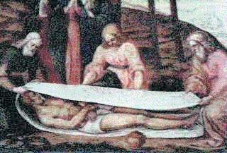
Na Mortalha Sagrada ficaram gravadas duas tênues impressões, mas de notável nitidez, mostrando a frente e as costas do SENHOR. Os vapores de amonÃaco úmido desprendidos do Corpo, misturado com o suor e sangue de JESUS, junto com o aloés e a mirra, encadearam uma reação quÃmica que sob a luz incandescente da Ressurreição, imprimiram de maneira sobrenatural e admirável o Corpo de CRISTO no Lençol Mortuário, deixando as marcas da crucificação, realçando as feridas, os flagelos e os orifÃcios por onde penetraram os cravos de ferro e a lança do centurião.
No dia 28 de Maio de 1898 por ocasião do casamento de Vitor Emanuel III com Helena de Montenegro em Turim, na Itália, o Sudário foi exposto publicamente pela primeira vez e o advogado Secondo Pia foi autorizado a fotografá-lo. Grande foi a sua surpresa quando ao revelar a chapa fotográfica, constatou que ela apresentava como se fosse o positivo da foto, mostrando o Rosto de JESUS Crucificado com impressionante nitidez e majestade. Os claros e escuros que estão no tecido, se apresentavam na chapa como se fosse o positivo. Ou seja, tudo o que aparece em escuro no tecido (devido ao sangue), na chapa negativa aparece claro. Então as cores ficaram invertidas, comparadas com os negativos convencionais. Por isso mesmo, causou surpresa e comoção quando revelada a chapa apareceu o retrato de JESUS. A notÃcia se espalhou e as fotos foram divulgadas com ansiedade. O mundo admirado, pode conhecer e contemplar pela primeira vez, a verdadeira FACE DO SENHOR Crucificado.
A partir de então, teólogos, sacerdotes e leigos,
se empenharam em estudos e numa febril e perseverante busca, para maior
conhecimento daquela valiosa relÃquia. 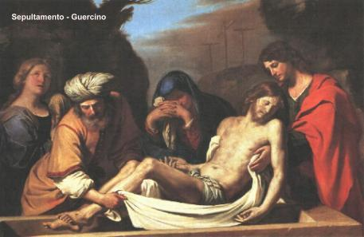
Mas os sinais de autenticidade são muito evidentes, o que encorajou ainda mais os fieis a encontrar respostas para aquela impressionante relÃquia.
Em 1902, além de outros fatos, aconteceu uma manifestação importante de Yves Delage, um conhecido e conceituado professor de anatomia comparativa da Universidade Sorbonne, em Paris, na França. Examinando as fotografias do Sudário, fez uma avaliação da imagem do corpo nele impresso e a posição das feridas. Concluiu que “elas estavam anatomicamente precisas e portanto, seria virtualmente impossÃvel um artista criá-las com tanta perfeição.â€
Em 1932, depois de minuciosos estudos, o médico francês Dr. Pierre Barbet afirmou:
“A morfologia do sangue no Sudário apresenta dois tipos de sangue: o sangue vivo ou saÃdo quando JESUS estava vivo, caracterizado pela tÃpica margem de fibrina ao lado do filete ou da mancha, e de uma parte mais clara no centro, denominada plasmática; e o sangue post mortem, ou seja, saÃdo após a morte, como por exemplo o da ferida do lado direito, feita pela lança do centurião, caracterizada pela posição inversa: plasma na periferia e fibrina no centro. Estas duas caracterÃsticas morfológicas do sangue, revelam que as impressões do Sudário não são obra de um falsário, o qual não podia conhecer naquela época este aspecto da coagulação, nem o processo fibrinolÃtico que favoreceu o decalque da substância hemática no tecido, devido à ação hemolÃtica do aloés e da mirra, durante o tempo que o tecido esteve em contato com o corpo.â€

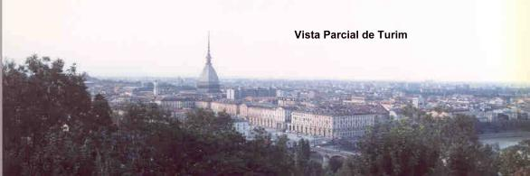
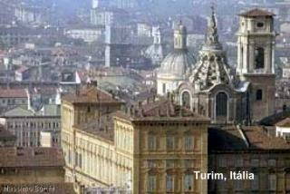
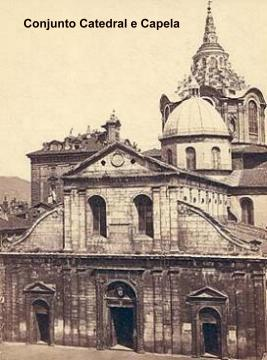
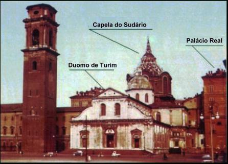
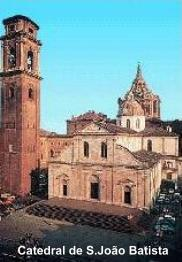

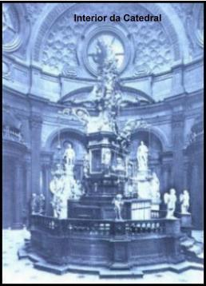
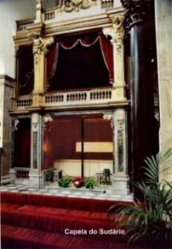
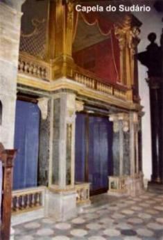
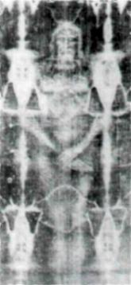